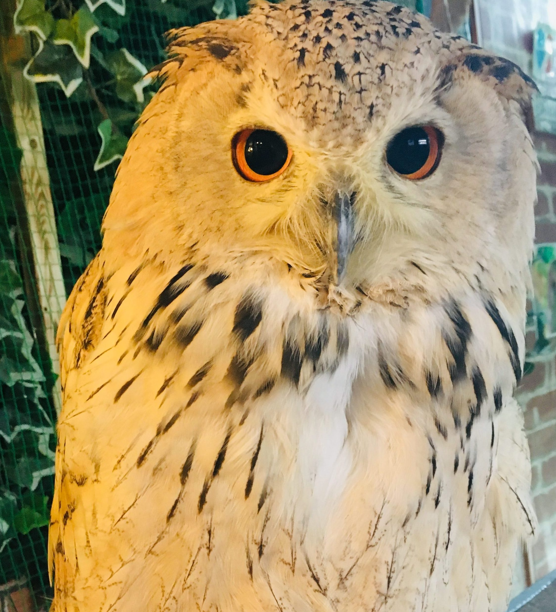

Exploring the intersection of Quantitative Methods and Social Systems.
I hold a B.Econ from the University of Sydney, majoring in Data Science and Econometrics. Currently focused on AI in Health, agent-based social simulation, and causal inference.
My academic interest inquiries into econometrics, quantitative sciences and statistical machine learning.
Revisiting causal effects of college attendance using updated instrumental variable methods in the digital age.
Applied Data Science, Machine Learning & Healthcare AI.
Data-driven identification for new school sites using POI normalization and GIS mapping.
Key biomarker discovery using the Golub et al. (1999) gene expression dataset.
A Genomic Data-Based Diagnostic Assistant using LLM & XGBoost.
My skillset bridges the gap between traditional quantitative theory and modern computational intelligence. I specialize in interpreting complex real world data through rigorous statistical and technical frameworks.